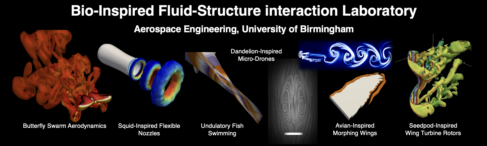

Doudou Huang, Chandan Bose, Antonio Attili, Ignazio Maria Viola
Journal of Fluid Mechanics, under review, 2026.Preprint is available on request.
This paper investigates how permeability governs wake stability and flow transitions behind three-dimensional disks. It identifies distinct wake regimes and reveals that increasing flow speed can either destabilise or stabilise the wake depending on disk permeability. At moderate permeability, the wake exhibits an unusual destabilisation followed by restabilisation, alongside a newly identified periodic vortex-splitting regime. The findings demonstrate the potential of permeability as an effective passive strategy for controlling wake dynamics.
Paras Singh, Yukesh Karki, Victor Hernandez, Daehyun Choi, Saad Bhamla, Chandan Bose*
Physical Review Fluids, under review, 2026.https://doi.org/10.48550/arXiv.2606.19252
This paper examines bio-inspired pulsed-jet propulsion using rigid and flexible nozzles. Through computational simulations and multi-objective optimisation, it shows that rigid nozzles generate greater thrust but require substantially more energy, whereas flexible nozzles provide superior propulsion efficiency by converting input energy more effectively into useful output. The findings reveal how controlled nozzle deformation improves fluid entrainment, jet acceleration, and pressure recovery, offering valuable design principles for energy-efficient underwater propulsion systems.
Hibah Saddal, Lucky Jayswal, Chandan Bose*
Journal of Fluids and Structures, under review, 2026.https://doi.org/10.48550/arXiv.2603.27794
This paper investigates how bird-inspired flexible wings passively respond to sudden gust-like motions. It identifies an optimal level of flexibility for lift generation that depends strongly on wing shape, with falcon- and owl-inspired profiles absorbing and redistributing unsteady loads more effectively than a conventional aerofoil. The findings reveal how wing flexibility and gust intensity govern deformation, vortex dynamics, and force control, providing useful design principles for resilient drones and underwater vehicles.
Haimi Jha, Hibah Saddal, Chandan Bose*
Journal of Fluids and Structures, under review, 2026.https://doi.org/10.48550/arXiv.2603.27840
In this study, we use a data-driven technique called Sparse Identification of Nonlinear Dynamics (SINDy) to automatically learn the governing equations of VIV directly from simulation data, without assuming a model structure in advance. A variant called Weak SINDy proves significantly more robust when the vibration response is irregular, precisely the conditions under which traditional models struggle most. The findings demonstrate that data-driven equation discovery offers a promising and computationally efficient route to modelling complex fluid–structure interactions, with direct implications for the predictive design and health monitoring of engineering structures exposed to flow-induced loading.
Daehyun Choi, Paras Singh, Saad Bhamla, Chandan Bose*
Journal of Fluid Mechanics, under review, 2026.https://doi.org/10.48550/arXiv.2605.17319
This study explores how a soft, flexible nozzle, inspired by the jet mechanism of squid, can improve propulsion. Using advanced computer simulations, we show that when the nozzle walls are able to deform, they briefly store energy as the jet pushes through them. Because flexibility slows the speed of deformation waves, the nozzle expands for longer, drawing in more surrounding fluid while delaying the formation of disruptive vortices. As the nozzle recoils, the stored elastic energy is released, accelerating the jet more strongly than in a rigid tube. The result is a significantly more powerful and efficient pulse, producing larger vortex rings and a much greater overall thrust. In simple terms, a well-tuned flexible nozzle acts like a tiny spring that boosts jet performance, offering valuable design insights for future bio-inspired underwater vehicles and soft robotic propulsion systems.
Daehyun Choi, Paras Singh, Ian Bergerson, Minho Kim, Jieun Park, Halley J. Wallace, Kenny Zhang, Sandy Y. Hsieh, Aqua T. Asberry, Theodore A. Uyeno, William F. Gilly, Hyungmin Park, Daeshik Kang, Chandan Bose, Saad Bhamla
Science Advances, under review, 2026.https://doi.org/10.48550/arXiv.2605.03239
Squid move by rhythmically squeezing water out of their bodies like tiny underwater jet engines. Instead of acting as a rigid tube, the squid’s funnel is slightly flexible: it expands and then springs back at just the right moment during each jet pulse. This subtle “store-and-release” motion allows the animal to boost the force of the jet far beyond what a stiff nozzle could produce. By combining biological observations, experiments with soft engineered nozzles, and computer simulations, we show that matching the timing of nozzle motion to the jet acceleration can dramatically increase thrust and efficiency. The results suggest a simple design principle for soft robotic thrusters and fluid devices: a well-tuned flexible nozzle can passively amplify performance, much like a tiny elastic energy reservoir built into the jet.
Pankaj Rohilla, Johnathan N. O’Neil, Paras Singh, Victor M. Ortega-Jimenez, Daehyun Choi, Chandan Bose*, Saad Bhamla
Royal Rociety Interface, Under Review, 2026.https://doi.org/10.1101/2024.06.17.599397
This study reveals that vortex recapture, a key mechanism underlying efficient locomotion in bulk fluids, also operates at the air–water interface. Using experiments, high-speed flow measurements, physical models, and simulations, the authors show that the water strider Microvelia americana exploits interfacial vortex recapture by re-energising vortices shed by the middle legs with the hind legs, effectively creating a virtual wall that enhances thrust. This mechanism is enabled by the insect’s tripod gait, leg morphology, and precise leg timing, overcoming the unique challenges of surface-tension-dominated flows. The findings extend vortex recapture theory to interfacial locomotion and provide design principles for energy-efficient surface-walking microrobots.
Debajyoti Kumar, Siddharth D Sharma, Chandan Bose, Somnath Roy
Computer Methods in Applied Mechanics and Engineering, Volume 461, Part C, Article: 119241, 2026.https://doi.org/10.1016/j.cma.2026.119241 [Preprint]
This paper presents a GPU-optimised overset-grid framework coupled with a sharp-interface immersed boundary method for high-fidelity simulation of incompressible flows with moving, interacting bodies and complex geometries. By replacing traditional, costly overset operations with lightweight block reallocation, minimal interface mapping, and flux-preserving interpolation, the method achieves excellent scalability and efficiency on multi-GPU systems without message passing. The solver is rigorously validated across canonical and complex benchmarks, demonstrating second-order accuracy, strong mass conservation, and DNS-level resolution at high Reynolds numbers. Multi-body simulations further highlight its robustness in capturing unsteady vortex interactions, while overall performance shows up to 200× speed-up over CPU execution with substantially reduced mesh requirements, establishing a powerful and scalable tool for turbulent and bio-inspired flow problems.
Jawahar Sivabharathy Samuthira Pandi, Ahmet Gungor, Chandan Bose, Antonio Attili, Ignazio Maria Viola
Journal of Fluid Mechanics, Volume 1040, A23, 2026.https://doi.org/10.1017/jfm.2026.11850
This study uses fully coupled fluid–structure interaction simulations to examine how transverse gusts influence the dynamics of free-falling plates over a range of Galilei numbers, density ratios, and gust strengths. Gusts act as transient horizontal impulses that alter the plate’s angle of attack, increase circulation, and enhance upward aerodynamic forces, temporarily slowing vertical descent and increasing altitude gained. Additional lift arises from the plate’s lateral displacement relative to its wake, while a similar gust-induced uplifting mechanism is identified for circular cylinders through the nonlinear drag response to increased relative velocity. The altitude gain depends non-monotonically on flow and gust parameters due to gust-induced pitching, revealing a passive energy-harvesting mechanism by which freely falling bodies can extend their time aloft.
Doudou Huang, Chandan Bose, Antonio Attili, Ignazio Maria Viola
Journal of Fluid Mechanics, Volume 1035, A15, 2026.https://doi.org/10.1017/jfm.2026.11514
This study numerically examines the steady and unsteady wake dynamics of three-dimensional permeable disks over a wide range of Reynolds and Darcy numbers. At low permeability, the wake undergoes the same sequence of bifurcations as impervious disks, with increasing permeability delaying the onset of unsteadiness. At high permeability, all unsteady bifurcations are suppressed and the wake remains steady across the Reynolds numbers considered. At intermediate permeability, two previously unreported regimes emerge—an SVR “breathing” mode and an intermittency regime—arising from nonlinear interactions and energy competition between distinct wake instabilities. Overall, the results show that permeability can fundamentally reshape wake dynamics and act as an effective stabilising mechanism for free-falling disks.
Chandan Bose, Callum Bruce, Ignazio Maria Viola
Theoretical and Computational Fluid Dynamics, 39, 19, 2025.https://doi.org/10.1007/s00162-025-00740-6
This paper examines how permeability modifies the flow topology and aerodynamic forces on two-dimensional rectangular plates at incidence over low to moderate Reynolds numbers. At low Reynolds number, increasing permeability progressively weakens and ultimately eliminates wake recirculation structures, leading to reduced lift, drag, and torque through attenuation of the leading- and trailing-edge shear layers. The study also identifies regimes where permeability can locally enhance plate-wise force due to pressure-side shear effects and reveals distinct topological transitions in the wake as incidence varies. Overall, the results clarify how permeability fundamentally alters wake structure and force generation on small permeable bodies.
Dheeraj Tripathi, Chandan Bose, Sirshendu Mondal, J Venkatramani
Journal of Fluids and Structures, Volume 133, 104246, 2025.https://doi.org/10.1016/j.jfluidstructs.2024.104246
This study uses wind-tunnel experiments on a flexible NACA 0012 airfoil to examine how structural parameters influence bifurcations and instability mechanisms in aeroelastic systems under dynamic stall. By varying frequency ratio, static imbalance, and nonlinear stiffness in both deterministic and stochastic flow environments, the work reveals atypical routes to stall-induced oscillations. A synchronization-based analysis shows that modal interactions between bending and torsional motions govern the onset and nature of these instabilities. The results provide a unified physical interpretation of stall-induced aeroelastic bifurcations, highlighting the coupled roles of aerodynamic and structural nonlinearities.
Rohit Chawla, Aasifa Rounak, Chandan Bose, Vikram Pakrashi
Physics of Fluids, 36, 127148, 2024.https://doi.org/10.1063/5.0236147
This study examines what happens when a vibrating structure interacting with a fluid repeatedly collides with a rigid barrier. The motion of the structure and the swirling wake it generates are represented using simple mathematical oscillator models. When impacts occur, the system’s behaviour changes in unexpected ways: stable vibration patterns can suddenly shift, multiple motion states can coexist, and the dynamics can alternate between regular cycles and chaotic motion. By developing a specialised mathematical mapping technique, we accurately describe how motion evolves near the impact events and predict when the system remains stable or becomes chaotic. In practical terms, the work helps explain and anticipate complex vibrations in engineering systems where fluid forces and intermittent contact occur together, such as flexible components near walls or constraints.
Alex Cavanagh, Chandan Bose , Kiran Ramesh
Physics of Fluids, 36, 117115, 2024.https://doi.org/10.1063/5.0227012
This study explores how the shape of a wing and the speed of its flapping motion influence the formation of swirling air structures known as leading-edge vortices (LEVs), which play a key role in lift generation. Using detailed computer simulations, we analyze wings with different sweep angles and flapping speeds similar to those of small flying animals and micro-air vehicles. The results show that faster flapping creates sharp bursts of lift but also causes the vortices to detach and move away more quickly, altering how lift is produced. We also find that the way these vortices break down changes with motion speed, revealing different instability mechanisms. In simple terms, the study clarifies how wing geometry and flapping rhythm work together to control aerodynamic performance, offering useful guidance for designing more efficient bio-inspired flying devices.
Junlei Wang, Shenfang Li, Daniil Yurchenko, Hongjun Zhu, Chandan Bose
Physics of Fluids, 36, 063602, 2024.https://doi.org/10.1063/5.0207136
This study examines how placing a small fixed cylinder behind a vibrating cylinder changes the way fluid flow affects its motion. When fluid moves past a flexible structure, swirling vortices can cause regular oscillations known as vortex-induced vibration. However, the presence of a nearby downstream cylinder can significantly alter the flow, sometimes triggering a different, larger-amplitude motion called galloping. Using computer simulations, we show that the spacing between the cylinders controls how the wake patterns form and interact, which in turn determines whether vibrations are amplified, suppressed, or become irregular. In simple terms, the work explains how nearby structures reshape fluid forces and vibrations, offering insights useful for reducing unwanted oscillations or improving energy-harvesting devices in engineering systems such as offshore components, heat exchangers, and slender structural elements.
Chhote Lal Shah, Dipanjan Majumdar, Chandan Bose , Sunetra Sarkar
Journal of Fluids and Structures, Volume 127, 104134, 2024.https://doi.org/10.1016/j.jfluidstructs.2024.104134
This study investigates how making a flapping foil slightly flexible can stabilise the complex flow patterns that form behind it. A rigid foil flapping at high speeds tends to produce irregular, chaotic wakes, leading to unpredictable forces and reduced efficiency. By introducing flexibility, the foil can passively adapt its shape, which smooths the wake and restores more regular, repeating flow structures. Interestingly, there is an optimal level of flexibility: too little flexibility allows chaos to persist, while too much flexibility brings chaotic behaviour back through different physical mechanisms. The results show that flexibility can act as a natural flow-control strategy, improving stability and propulsion performance. In simple terms, a well-tuned flexible flapper behaves more like a self-regulating system, offering useful design insights for bio-inspired propulsion, energy harvesters, and soft robotic swimmers.
Abraham Thomas Chirathalattu*; Santhosh B; Chandan Bose , Rony Philip; Bipin Balaram
Mechanical Systems and Signal Processing , Volume 182, 109556, 2023.https://doi.org/10.1016/j.ymssp.2022.109556
This study investigates the suppression mechanism of instabilities induced by fluid-structure interactions (FSI) using passive vibration absorption devices, such as nonlinear energy sink (NES). The present FSI framework comprises a low-order phe- nomenological model, wherein the wake effect is modelled using the classical Van der Pol oscillator. The structure is represented as a cylindrical bluff body with degree-of- freedom along the cross-flow direction. The response of the NES-augmented struc- ture exhibits specific relaxation type oscillations, referred to as strongly modulated response (SMR), passively suppressing the high amplitude vortex-induced vibrations (VIV). The underlying mechanism of SMR is studied using an analytical approach based on the Complexification-Averaging (CXA) technique.
Chhote Lal Shah, Dipanjan Majumdar, Chandan Bose , Sunetra Sarkar
Journal of Fluid Mechanics, Volume 946 , A12, 2022.https://doi.org/10.1017/jfm.2022.591
This study explores how adding a flexible rear section to a flapping wing changes the flow patterns it produces. A wing with a fully rigid tail tends to generate unstable wakes, where the jet of air behind it repeatedly switches direction and can even become chaotic. When a flexible tail is introduced, the wing can passively adapt its shape during motion, which stabilises the wake and suppresses this jet-switching behaviour. With sufficient flexibility, the wake becomes more symmetric and regular, indicating smoother, more predictable aerodynamic forces. The results show that structural flexibility can act as a natural stabilising mechanism, helping control complex flow behaviour. In simple terms, a well-designed flexible tail allows the wing to “self-adjust,” improving flow stability and offering useful guidance for designing efficient bio-inspired flyers and fluid-driven propulsion systems.
Dipanjan Majumdar, Chandan Bose , Sunetra Sarkar
Journal of Fluid Mechanics , 942, A40, 2022.https://doi.org/10.1017/jfm.2022.385
This study develops a dynamical transition framework for the unsteady wake of a flapping foil at low Reynolds numbers, presenting an order-to-chaos map derived from a broad kinematic parameter space. The analysis shows that conventional nondimensional groups fail to consistently characterise wake transitions across varying motion parameters. To address this limitation, two physically grounded measures—the maximum effective angle of attack and a leading-edge amplitude-based Strouhal number—are introduced. These parameters successfully collapse diverse datasets and enable generalised transition boundaries separating periodic, quasi-periodic, and chaotic regimes. Validation against published results demonstrates strong agreement, supporting the robustness and predictive utility of the proposed transition map for flapping-foil dynamics.
Sai Vishal Gali*, Ashwad Raaj*, Chandan Bose , Venkatramani Jagadish, Grigorios Dimitriadis
Nonlinear Dynamics , 108, 3025-3051, 2022.https://link.springer.com/article/10.1007/s11071-022-07352-3
The present study focuses on investigating the bifurcation characteristics of a pitch-plunge aeroelastic system possessing coupled non-smooth nonlinearities, both in structural and aerodynamic fronts. At low airspeeds, the dynamical transitions occur predominantly due to the structural freeplay nonlinearity while the flow remains attached to the surface of the wing. However, beyond a critical value of airspeed, the system response is dominated by high amplitude pitch-dominated limit-cycle oscillations, which can be attributed to stall flutter. It is demonstrated that the freeplay gap plays a key role in combining the effects of structural and aerodynamic nonlinearities. At higher values of the freeplay gap, interesting discontinuity-induced bifurcation scenarios, such as grazing and boundary equilibrium bifurcations arise due to coupled nonlinear interactions, which can significantly impact the safety of the aeroelastic system.
Dheeraj Tripathi*, R. Shreenivas*, Chandan Bose , Sirshendu Mondal, J Venkatramani
Chaos, 32, 073114, 2022.https://doi.org/10.1063/5.0096213
This study focuses on characterizing the bifurcation scenario and the underlying synchrony behaviour in a nonlinear aeroelastic system under deterministic as well as stochastic inflow conditions. Wind tunnel experiments arecarried out for a canonical pitch-plunge aeroelastic system subjected to dynamic stall conditions. We observe intermittent phase synchronization between pitch and plunge modes near the fold point; whereas, synchronization via phase trappingis observed near the Hopf point. Repeating the experiments under stochastic inflow conditions, we observe two different aeroelastic responses; low amplitude noise-induced random oscillations (NIROs) and high amplitude random LCOs (RLCOs) during stall flutter. The present study shows asynchrony between pitch and plunge modesin the NIRO regime. At the onset of RLCOs, asynchrony persists even though the relative phase distribution changes. With the further increase in flow velocity, we observe intermittent phase synchronization in the flutter regime.
Dheeraj Tripathi*, Sai Vishal*, Chandan Bose , J Venkatramani
International Journal of Nonlinear Mechanics , 142, 104003, 2022.https://doi.org/10.1016/j.ijnonlinmec.2022.104003
This study focuses on characterizing the fatigue damage accumulated in nonlinear aeroelastic systems subjected to stochastic input flows. The response dynamics and the associated fatigue damage of the aeroelastic system, possessing different sources of nonlinearities, are systematically investigated under isolated cases of deterministic and stochastic input flows. It is observed that different time scales and intensities of the oncoming flow fluctuation play a pivotal role in dictating the fatigue damage in aeroelastic systems. Fatigue damage is observed to be significantly higher for torsionally dominant oscillations in the dynamical stall regime compared to the oscillations at the attached flow regime.
Sai Vishal Gali*, Ashwad Raaj*, Chandan Bose , Venkatramani Jagadish
International Journal of Nonlinear Mechanics , Volume 135, 103766, 2021.https://doi.org/10.1016/j.ijnonlinmec.2021.103766
In this study, we investigate the response characteristics of a pitch-plunge aeroelastic system possessing coupled non-smooth nonlinearities, namely free-play in the structure and dynamic stall in the flow. We demonstrate the need to present a one-one relationship between the dynamic stall behavior with respect to the output aeroelastic response. We systematically demonstrate the different routes to synchronization in the nonlinear aeroelastic problem and use the same to heuristically demarcate coupled mode flutter against stall flutter.
Junlei Wang; Shanghao Gu; Abdessattar Abdelkefi; Chandan Bose
Smart Materials and Structures , 30, 05LT01, 2021.https://doi.org/10.1088/1361-665X/abefb5
This study is focused on enhancing the piezoelectric energy harvesting from the flow-induced vibration of a circular cylinder by using two symmetric splitters in different relative angular positions with respect to the oncoming uniform flow. Both wind tunnel experiments and numerical simulations are carried out to study the effect of different installation angles of the dual splitters on the energy harvesting efficiency with the increasing flow velocity. This study systematically carries out the performance analysis of the vortex-induced vibration-based energy harvester with multiple splitters and directly contributes to the optimized design of an innovative wind energy harvester.
Chandan Bose ; Sayan Gupta; Sunetra Sarkar
Journal of Fluid Mechanics , 911, A31, 2021.https://doi.org/10.1063/5.0024084
This study explores the transitional wake dynamics of a simultaneously pitching–heaving airfoil at low Reynolds numbers, focusing on the largely unexplored loss of stability of deflected reverse Kármán wakes at high dynamic heave velocities (κh). While classical transitions from Kármán to reverse Kármán patterns occur within periodic regimes, the work shows that further increases in κh induce quasi-periodic behaviour in the near-field, accompanied by intermittent aperiodic windows. These instabilities trigger far-field jet deflection switching through vortex-couple flipping, ultimately leading to fully chaotic wake dynamics via rapid aperiodic jet-switching. The analysis establishes a dynamic link between near-field vortex interactions, leading-edge vortex behaviour, and far-field wake transitions, using nonlinear dynamical diagnostics to reveal the mechanisms governing wake deflection and chaos onset.
Dipanjan Majumdar; Chandan Bose ; Sunetra Sarkar
Physics of Fluids , 32, 117105, 2020.https://doi.org/10.1063/5.0024084
This study investigates how stochastic inflow fluctuations influence jet-switching dynamics in the wake of a harmonically plunging elliptic foil at low Reynolds numbers. The inflow disturbances are modelled using an Ornstein–Uhlenbeck process, enabling controlled variation of fluctuation intensity and timescales. While jet-switching in the deterministic case arises from quasi-periodic vortex motion at higher dynamic plunge velocities, the introduction of fluctuations disrupts the organized vortex street and triggers earlier switching even at lower κh. The analysis further shows increased switching frequency and larger wake deflection angles, with inflow correlation length governing the switching characteristics. Combined qualitative flow visualisation and quantitative diagnostics clarify the mechanisms by which stochastic forcing modifies vortex interactions and wake dynamics.
Dipanjan Majumdar; Chandan Bose ; Sunetra Sarkar
Journal of Fluids and Structures , Volume 95, Pages 102999, 2020.https://doi.org/10.1016/j.jfluidstructs.2020.102999
This study examines the flow-physics mechanisms governing the transition from periodic to chaotic wake dynamics around a plunging foil as the nondimensional plunge velocity increases. High-resolution simulations using an in-house discrete-forcing immersed boundary method (IBM) reveal a quasi-periodic route to chaos, with detailed analysis across distinct dynamical regimes. The IBM predictions are systematically benchmarked against a well-validated body-fitted arbitrary Lagrangian–Eulerian (ALE) formulation, demonstrating strong qualitative and quantitative agreement. The results highlight the capability of non-conformal mesh approaches to capture complex, aperiodic flow topologies, while showing that distributed momentum forcing and mass/source–sink treatments within the IBM framework accurately reproduce the unsteady vortex interactions responsible for triggering and sustaining aperiodicity.
Chandan Bose ; Sayan Gupta; Sunetra Sarkar
International Journal of Non-Linear Mechanics , Volume 109, Pages 189 - 203, 2019.DOI: 10.1016/j.ijnonlinmec.2018.11.012
This work numerically investigates the transition from periodic to chaotic behaviour in the coupled fluid–elastic response of a two-degree-of-freedom flexibly mounted airfoil with chordwise rigidity. A high-fidelity Navier–Stokes solver is weakly coupled to a geometrically nonlinear structural model incorporating cubic stiffness terms, representing lightweight aeroelastic systems at low Reynolds numbers and very low added-mass ratios typical of micro air vehicles. Through bifurcation analysis using wind velocity as the control parameter, the study identifies the Ruelle–Takens–Newhouse quasi-periodic route to chaos—reported here for the first time in a flexible pitch–plunge configuration. Nonlinear time-series diagnostics are employed to rigorously characterise the evolving dynamical states and underlying aeroelastic mechanisms.
Chandan Bose ; Sunetra Sarkar
Physics of Fluids , Volume 30, Issue 4, 047101, 2018.This study examines how the wake of a symmetric NACA0012 airfoil evolves under coupled pitching–plunging motion at low Reynolds numbers, revealing a clear transition from periodic to chaotic dynamics as plunge amplitude increases. The work identifies leading-edge separation as the initial trigger for aperiodicity, followed by nonlinear vortex processes—shredding, merging, splitting, and collision—that generate spontaneous vortex pairs and sustain chaos. By interpreting the wake as a nonlinear dynamical system and employing both classical metrics and recurrence-based time-series tools, the study provides a mechanistic, quantitative framework linking vortex interactions to flow transition, demonstrating the effectiveness of non-classical dynamical analysis for flapping-flight aerodynamics.
Featured as Editor's Pick.
Chandan Bose ; Sayan Gupta; Sunetra Sarkar
AIAA Journal , Volume 56, Issue 5, Pages 2062-2069, 2018.This study characterises the emergence of quasi-periodic wake dynamics behind a spanwise flexible flapping airfoil, demonstrating that beyond a critical wind velocity the trailing-edge wake transitions from periodic to quasi-periodic behaviour in a regime of comparable structural and fluid added mass. The quasi-periodicity is established using complementary diagnostics, including vorticity-field correlations, reconstructed phase space, frequency spectra, Poincaré sections, and recurrence analysis of aerodynamic loads. The loss of strict periodicity is shown to induce pronounced variability in unsteady forces, highlighting the dynamical consequences of fluid–structure coupling and indicating that feedback control strategies may be necessary to ensure stable operation in such regimes.
Chandan Bose ; Vikas Reddy; Sayan Gupta; Sunetra Sarkar
Journal of Computational and Nonlinear Dynamics , Volume 13, Issue 2, 021014, 2017.This paper deals with the nonlinear fluid structure interaction (FSI) dynamics of a Dipteran flight motor inspired flapping system in an inviscid fluid. In the present study, the FSI effects are incorporated to an existing forced Duffing oscillator model to gain a clear understanding of the nonlinear dynamical behavior of the system in the presence of aerodynamic loads. The present FSI framework employs a potential flow solver to determine the aerodynamic loads. Interesting dynamical behavior including period doubling, chaotic transients, periodic windows, and finally an intermittent transition to stable chaotic attractor have been observed in the response with an increase in the bifurcation parameter.
S Krishna Kumar; Chandan Bose ; Shaikh Faruque Ali; Sayan Gupta; Sunetra Sarkar
Applied Physics Letters , Volume 111, Issue 24, 243903, 2017.This study investigates energy harvesting from vortex induced vibrations of a flexible cantilevered flapper placed in the wake of a rigid circular cylinder. The effect of the gap between the cylinder and the flapper on the energy harvested is investigated through wind tunnel experiments and numerical simulations. As the flow speed is varied, a transition in the flapper dynamics is observed, which in turn affects the power extracted by the harvester. Numerical investigations reveal that the flapper dynamics is different depending on whether the vortices are shed ahead or behind the flapper. This study concludes that the choice of the gap influences the energy harvesting potential of such harvesters.
Sandeep Badrinath; Chandan Bose; Sunetra Sarkar
European Journal of Mechanics/ B-Fluids , Volume 66, Pages 38-59, 2017.DOI: 10.1016/j.euromechflu.2017.05.012
This work investigates the emergence of chaotic wake dynamics behind flapping airfoils, focusing on the transition mechanisms at high plunge velocities. Using an incompressible Navier–Stokes framework and bifurcation analysis with plunge amplitude as the control parameter, the study shows that initially periodic vortex shedding is disrupted by intermittent chaotic bursts whose frequency grows with amplitude, ultimately leading to fully developed chaos. The transition is rigorously characterised using nonlinear time-series tools, including phase-space reconstruction and recurrence plots, which establish a Type I intermittency route to chaos—an observation not previously reported for flapping-airfoil flows. The analysis further links intermittency-driven vortex interactions to variations in thrust production, while recurrence-based quantitative measures reveal early signatures of the impending chaotic regime.